1. Relation Setup and Mockup
The first step involved setting up the relationships between the main entities: artists, albums, and songs. This included creating mockups to visualize the data structure and relationships.
This project is an Artist API developed using .NET/C# for the backend and React with TypeScript for the frontend. The API manages artists, albums, and songs.
GitHub RepositoryThe first step involved setting up the relationships between the main entities: artists, albums, and songs. This included creating mockups to visualize the data structure and relationships.
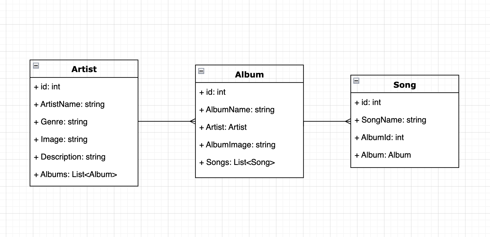
I started by setting up the web API with models, interfaces, and controllers in .NET/C#. Once the initial setup was complete, I tested the endpoints using Swagger to ensure they worked correctly.
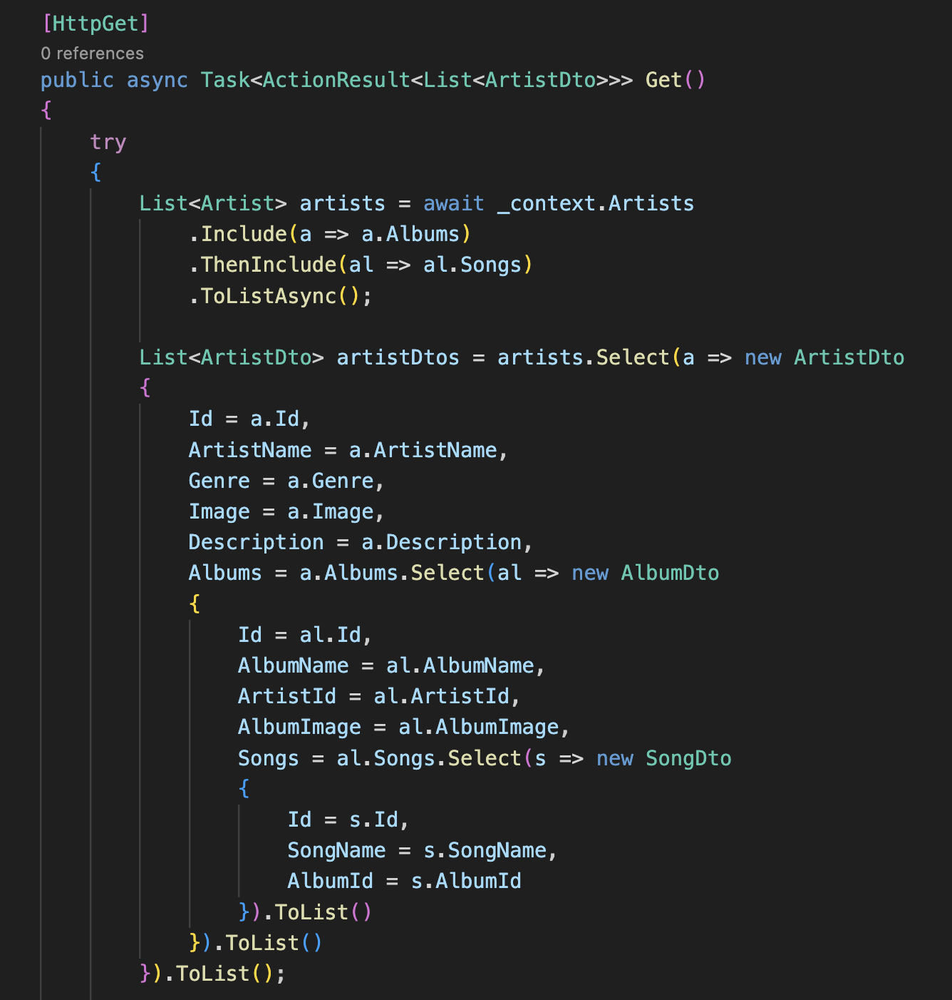
I added a `DbInitializer` class to populate the database with initial data, including ten artists, each with two albums and songs.
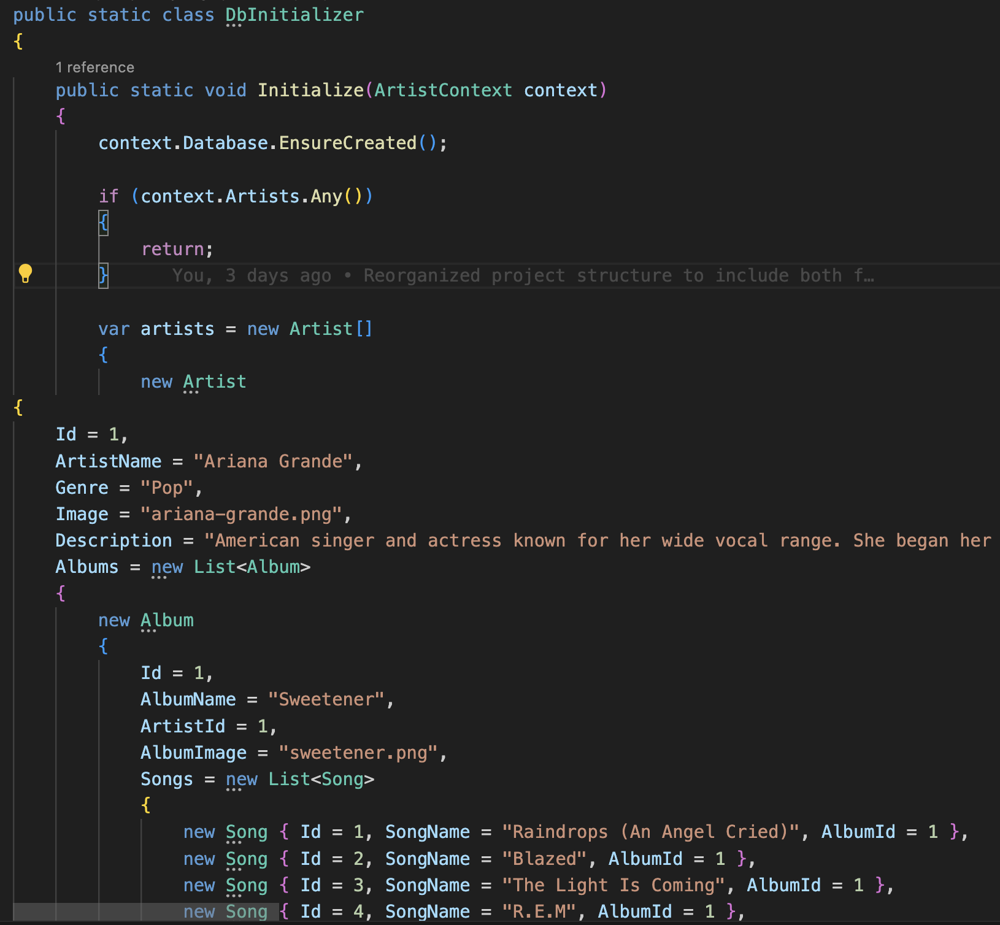
With the backend working, I set up the frontend using React and TypeScript. I created a service using Axios to fetch data from the backend and a context class to manage the state.
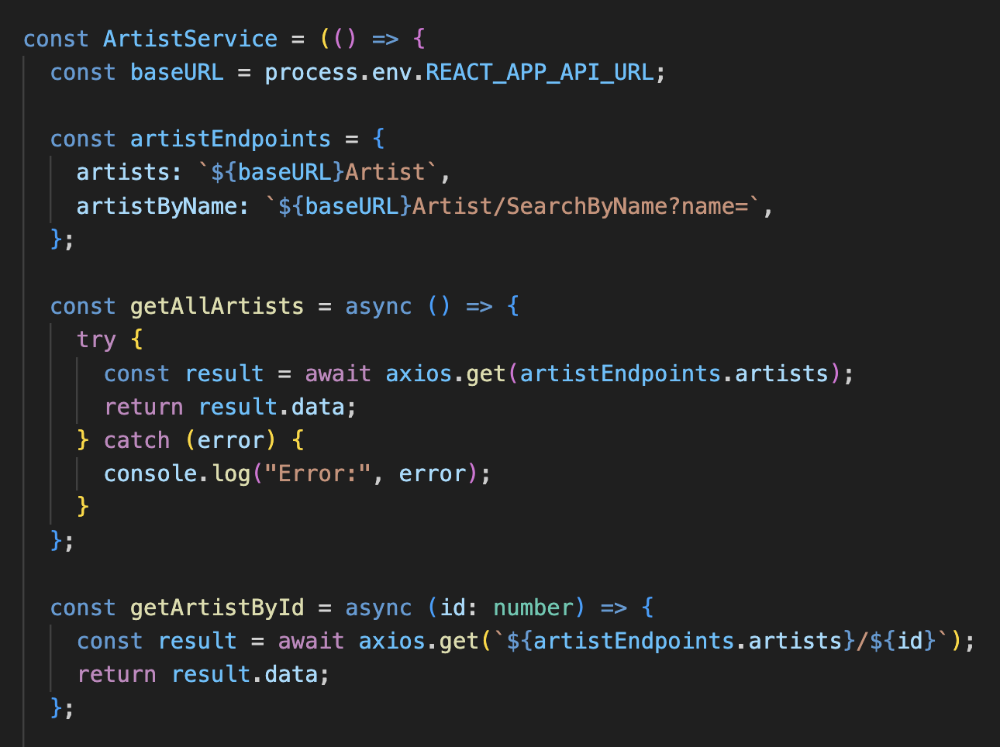
I built UI components such as `ArtistItem` and `ArtistList` to display artists. These components made use of the service and context to fetch and manage data.
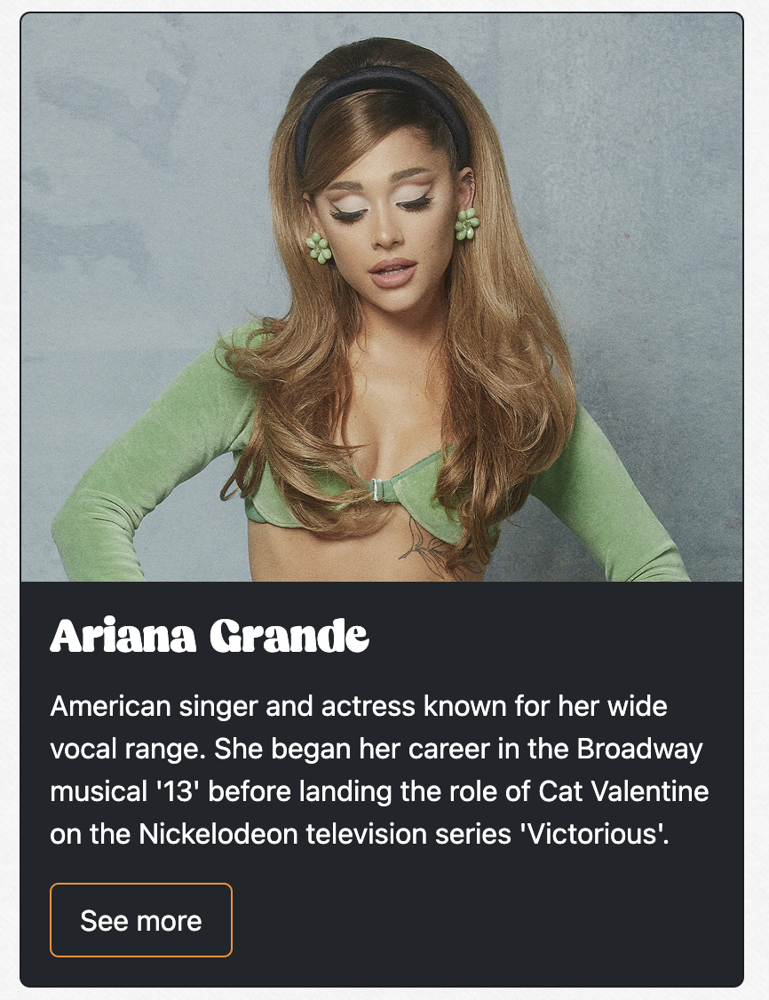
I added functionality for searching, adding, updating, and deleting artists. This included setting up form components and implementing error handling and user feedback features.
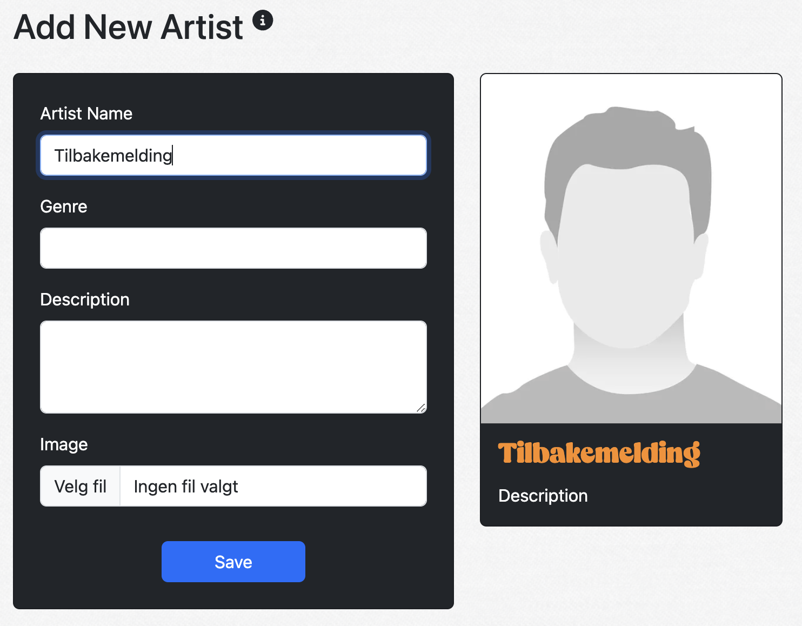
I refined the user experience by adding confirmations for delete actions, tooltips, and error handling. This made the application more user-friendly and robust.
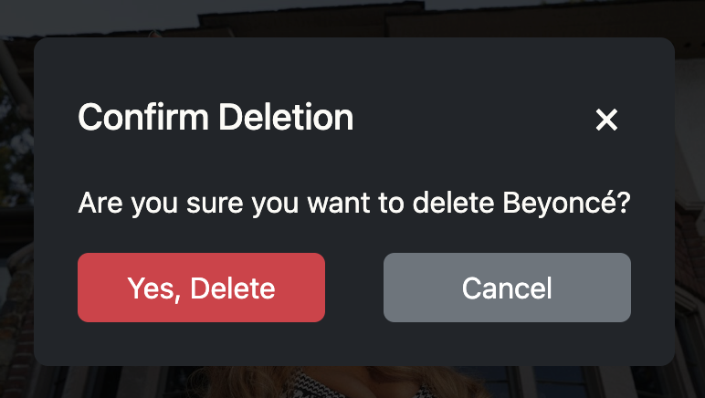
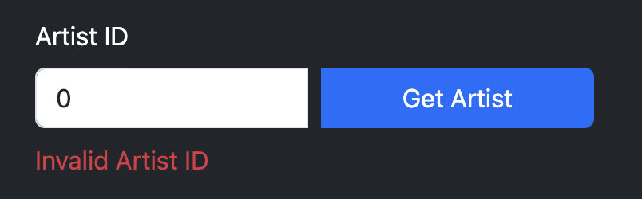
Throughout the project, I applied design principles and best practices to ensure a high-quality user interface. This included using consistent design patterns and ensuring accessibility.
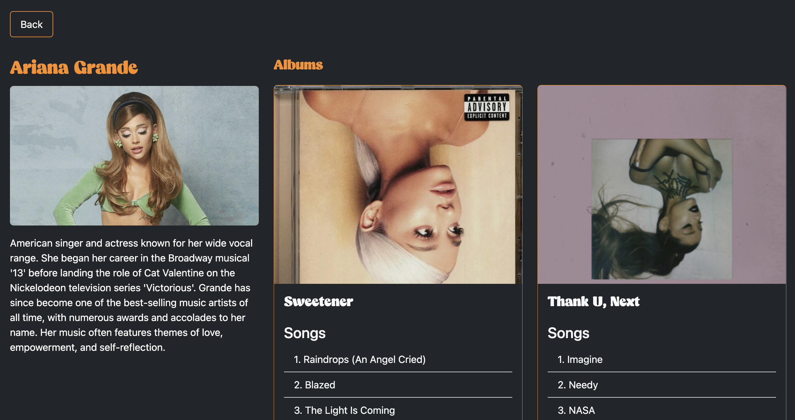
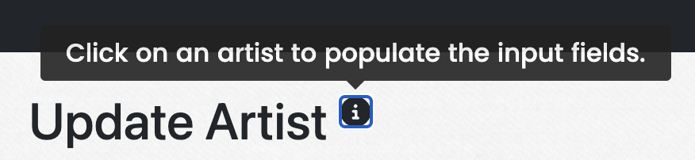
Currently, the application allows viewing artists, albums, and songs, but CRUD operations for albums and songs are not implemented. Future improvements include adding these operations and further refining the user experience.
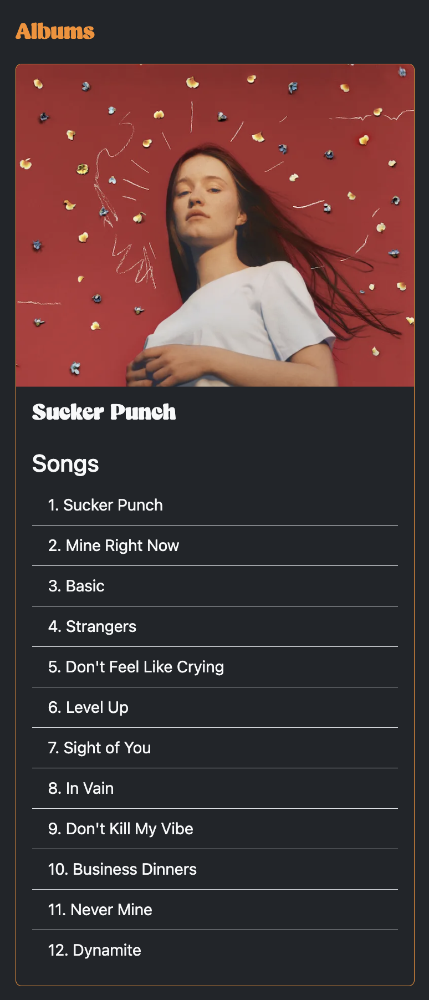